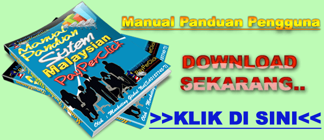
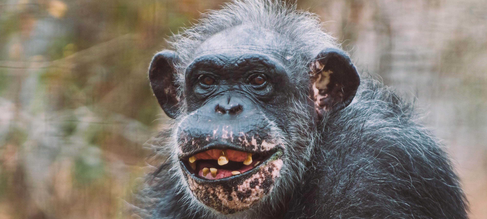
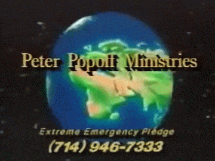
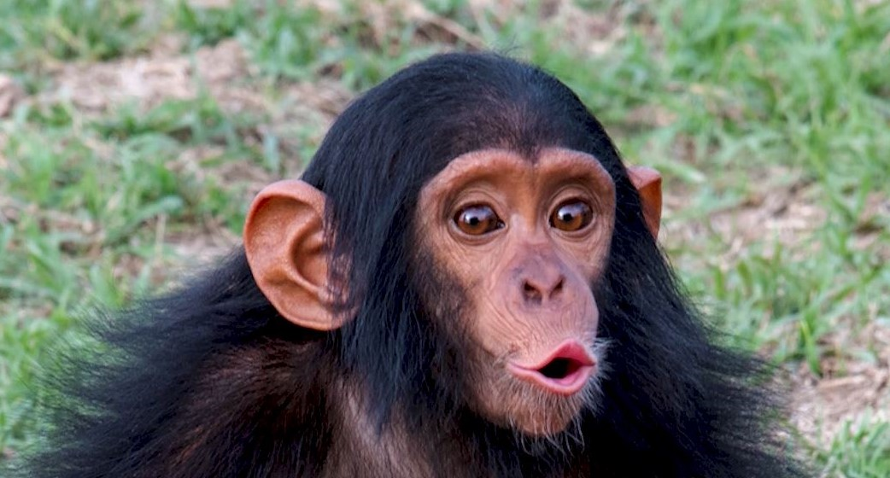

Über Uns
Um zu verstehen warum „Monkey Drip“ so wichtig für uns und unsere primitiven Freunde ist, schauen wir auf unseren geliebten Opa und seinen Affenfreund Mischa zurück. 1959 in Belarus als unser Opa Wolwo mit seinem Affen spazieren ging sah er, dass Misha zitterte und ihm kalt war. Da sie in keinem Laden ein passendes Kleidungsstück fanden beschloss unser Opa es einfach selbst in seiner kleinen Waschküche herzustellen. In Bobrovo wollten schnell auch alle ein wärmendes teil für ihre Affen, da sie immer so schnell erfrieren. Er beschloss die Klamotten zu verkaufen manche zogen die auf Affen zurechtgeschnittenen Klamotten auch ihren Kindern an. Er vergrößerte sich und erweiterte das Sortiment.
„Style your Monkey“ Es war ein neuer Trend geworden. Bekannt in ganz Belarus. Die 4 Enkel von Opa Wolwo haben die Firma geerbt und wollen den Trend mit den Stylischen Affen Klamotten für alle Tier- und Modeliebhaber zur Verfügung stellen und Opa Wolwos Traum in aller Ehren halten.

